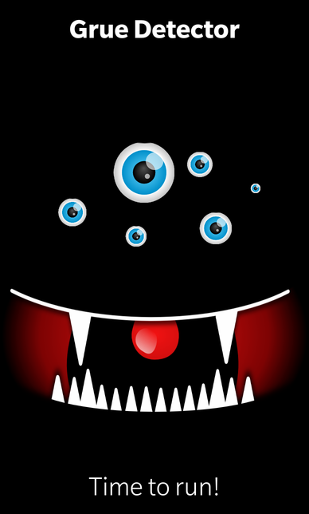

Files:
The Grue Detector example demonstrates how to use sensors from the QtSensors module to warn you about the chance of being eaten by a Grue.

In this example we'll learn how to use the QLightSensor, QLightFilter and QLightReading classes to retrieve the current LUX value from the light sensor of the device. If we are below a given threshold, we'll start a timer and increase the chance of being eaten every second.
The UI of this sample application consists of an ImageView that shows the grue and a Label that shows a status message.
The business logic of the application is encapsulated in the GrueDetector class which is made available to the UI under the name '_detector'.
Grue { horizontalAlignment: HorizontalAlignment.Center verticalAlignment: VerticalAlignment.Center scaleX: _detector.chance/100 scaleY: _detector.chance/100 chance: _detector.chance }
The UI of the Grue (the eyes and the mouth) are put into a separated file Grue.qml, which we use in main.qml. Depending on the chance of being eaten, we scale up/down the Grue component. If the chance is low, the grue is small, if the chance is high, the grue is large.
Label { horizontalAlignment: HorizontalAlignment.Center verticalAlignment: VerticalAlignment.Bottom text: _detector.chance > 90 ? qsTr ("Time to run!") : qsTr ("Chance to be eaten at %1%").arg(_detector.chance) textStyle { base: SystemDefaults.TextStyles.BigText color: Color.White } }
The status label shows the current numeric chance value or a warning message if the chance is too high.
The GrueDetector class encapsulates the business logic of the application. It contains a QLightSensor object, which does the low-level communication with the light sensor of the device, and provides a property 'chance' to make the calculated chance value available to the UI. It inherits from QCompassFilter and reimplements the 'bool filter(QLightReading*)' method to retrieve the sensor data from the QLightSensor object.
class GrueDetector : public QObject, public QLightFilter { Q_OBJECT // The property to access the chance value of being eaten by a grue Q_PROPERTY(int chance READ chance NOTIFY chanceChanged) public: GrueDetector(QObject *parent = 0); Q_SIGNALS: // The change notification signal of the chance property void chanceChanged(); protected: /** * This method is reimplemented from the QLightFilter interface and is * called by the QLightSensor whenever new values are available. */ bool filter(QLightReading *reading); private Q_SLOTS: // This method is called every second if we are in an dark environment void increaseChance(); private: // The accessor method for the chance property int chance() const; // The value of the chance property int m_chance; // The light sensor QLightSensor m_sensor; // A timer to calculate the chance QTimer *m_darkTimer; };
Inside the constructor we try to connect the QLightSensor object to the hardware backend. If that's successful, we register the GrueDetector class as filter for the QLightSensor object and start the sensor to gather data.
GrueDetector::GrueDetector(QObject *parent) : QObject(parent) , m_chance(0) , m_darkTimer(new QTimer(this)) { // At first we have to connect to the sensor backend... if (!m_sensor.connectToBackend()) { qWarning() << "Cannot connect to light sensor backend!"; } // ... and then add a filter that will process the reported data m_sensor.addFilter(this); // Start the gathering of data m_sensor.start(); connect(m_darkTimer, SIGNAL(timeout()), this, SLOT(increaseChance())); }
The 'bool filter(QLightReading*)' method is called whenever the QLightSensor object retrieved new data from the hardware sensor. Inside this method we check whether the current LUX value is smaller than 100. In this case it's dark around us, so we start a timer that increases the chance value every second by 10%. If the LUX value is larger than 100, we reset the chance value back to 0%.
bool GrueDetector::filter(QLightReading *reading) { if (reading->lux() < 100) { // Dark enough for meeting a Grue if (!m_darkTimer->isActive()) m_darkTimer->start(1000); } else { // everything is fine... m_darkTimer->stop(); m_chance = 0; emit chanceChanged(); } // Do no further processing of the sensor data return false; }